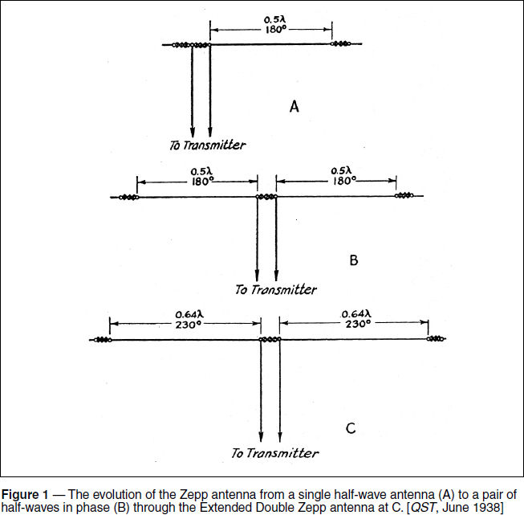
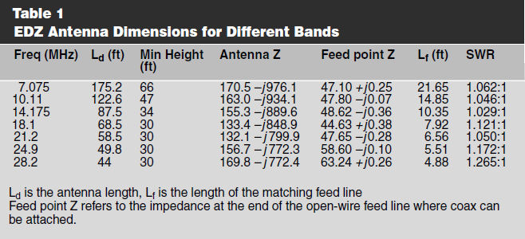
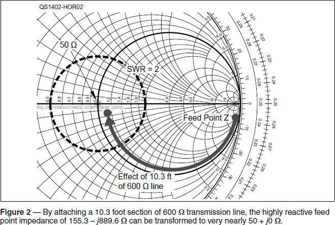

Experiment #133 — Extended Double Zepp Antenna
The reference to the Extended Double Zepp (EDZ) antennas in Experiment #131 (on the coax to open-wire balun) certainly generated some interest!1 The Zepp is one of the oldest antennas. Patented in 1909 by Hans Beggerow (German patent 225204, www.aktuellum.com/circuits/antenna-patent) the antenna is shown suspended vertically from a balloon (naming it after the Zeppelin airship came later) looking for all the world like an upside-down J-pole, which, in fact, it is!
The Zepp is usually imagined as horizontal, as in Figure 1A, and the J-pole as vertical, but electrically they are essentially the same antenna. Both use a quarter-wave section of transmission line to convert the high impedance at the end of a half-wave radiating element to a lower impedance suitable for attaching to feed line.

Pepping Up the Zepp
The half-wave Zepp offers no advantage over a center-fed dipole in terms of gain or directivity. The only difference is the feed point being located at the end of the Zepp and in the middle of the dipole. As a result, the basic Zepp has a gain of 0 dBd.2
Like arranging a pair of dipoles in an array to focus the radiated energy in a desired direction, creating gain, a pair of Zepps can be connected end to end as shown in Figure 1B. This creates the “two half-waves in phase” antenna that narrows the broadside pattern a bit and has gain of 1.9 dB over a single Zepp. (The net gain is less than 3 dB due to coupling between the separate elements.) The “double Zepp” is a basic collinear array with both elements lying along the same line.
The “missing” 1.1 dB of gain would be available if the radiation patterns of the two half-wave antennas could be added together independently. Coupling between the two antenna halves can be reduced by moving the elements farther apart, but feeding them would then become complicated. This problem was solved in a 1936 IRE paper by GH Brown who lengthened or extended each element from 180 degrees (half-wavelength) to 230 degrees, as seen in Figure 1C.
This antenna was introduced to amateurs in the June 1938 issue of QST by W2NB as the Extended Double Zepp or EDZ. Not only does the antenna “recover” the missing gain to a full 3 dBd but can also be easily matched to either open-wire or coaxial feed line through the use of transmission line techniques. A more recent QST article by W5JH gives the EDZ design information shown in Table 1 for HF bands from 40 through 10 meters.3

Feeding the Zepp
Matching the EDZ to a feed line is an interesting story. With each element of the array being longer than one half-wavelength, the feed point impedance is quite reactive. For example, W5JH gives the feed point impedance of a 20 meter EDZ as 155.3 – j889.6 Ω for an SWR of about 15.5:1. If connected directly to 100 feet of 50 Ω RG-8X coax that has 0.9 dB of matched loss at 20 meters, TLW calculates that a 15.5:1 SWR would result in 9.8 dB of additional loss for a total of 10.7 dB in the feed line.4 Obviously, it is a good idea to lower the SWR in some way!
Luckily, the impedance transforming properties of transmission lines can be used to change the impedance. (See Experiments #59 – 61 on the Smith Chart.) In this particular case, using a short length of high-impedance open-wire line (also called a ladder or window line) transforms the high feed point impedance (the “Antenna Z” column in Table 1) to something quite close to 50 Ω (the “Feed Point Z” column in Table 1). Figure 2 shows how a 10.3 foot section of 600 Ω line transforms the antenna feed point impedance point to very nearly 50 + j0 Ω at the center of the chart.

At the end of this short feed line section, you have two options — connect a 50 Ω feed line or extend the open-wire line by some multiple of half-wavelengths so that the 50 Ω point is reached again and attach the 50 Ω feed line (or transmitter) there. By attaching 50 Ω coax at a point where the high-impedance open-wire line presents a 50 Ω impedance the SWR will then remain low in the coax all the way to the transmitter.
If your antenna is up in the air, the end of the matching section of 600 Ω line will be dangling well off the ground and you might not want to lift that much coax. Furthermore, the solid conductors of most open-wire feed lines will break from flexing in the wind with this load attached. Since the impedances in a transmission line repeat every half-wavelength along the line, you can add feed line in half-wavelength sections and reach another 50 Ω point, hopefully near the ground or a mechanical support.
In our case, for 600 Ω open-wire line with a velocity factor of 0.92, one half-wavelength at 14.175 MHz is 32 feet. By adding multiples of 32 feet to the overall length, you can bring the 50 Ω point to a location where it is more convenient to attach a coaxial feed line, perhaps using a balun, as was shown in Experiment #131.
450 Ω window line also works but not quite as well. I found that TLW indicated that a length of 11.6 feet transformed the impedance to about 27 Ω for a minimum SWR of nearly 2:1. This is a lot better than 15.5:1 and will be lower at the end of the coax due to its loss but it might be worth buying or making your own 600 Ω line if you want to use this antenna system design.
I decided to go further by using EZNEC antenna modeling software (www.eznec.com), creating a design with a low SWR point on two bands, 20 and 15 meters while using 450 Ω window line. I started with the dimensions of the 20 meter EDZ in Table 1, and dug in. You can do this too — start with the W5JH dimensions then optimize for your needs.
By lengthening the antenna to 89 feet and using a transmission line length of 11.1 feet, an SWR of 1.6 was obtained at 14.05 MHz and 1.4 at 21.1 MHz. Bringing the low SWR point to ground level required more window line. Since I needed an integer number of half-wavelengths at both 14.05 and 21.1 MHz, I added 2 half-wavelengths at 14.05 MHz (63.8 feet according to TLW) for a total of 74.9 feet which is also 3 half-wavelengths at 21.1 MHz. A bit more optimizing gave a line length of 74.7 feet and an SWR of 1.5 and 1.3:1 on 20 and 15 meters, respectively. Including ground reflections, gain is around 8.7 dBi on both bands with no tuner required.
I’ve installed a trio of these antennas in a triangle so the three 20 meter patterns cover all the main DX azimuths. Being electrically long on 15 meters, the antenna generates “four-leaf clover” patterns so my next project is redesigning the antenna for a single main lobe on both bands. Luckily, W7SX tackled that question in a July 1999 QEX article so I will be putting EZNEC to work once again!5
1All previous Hands-On Radio experiments are available to ARRL members at www.arrl.org/hands-on-radio.\
2dBd specifies gain with respect to a dipole, usually in free space. Add 2.15 dB to obtain dBi, gain with respect to an isotropic radiator.
3J. Haigwood, W5JH, “The Extended Double Zepp Revisited,” Sep 2006, QST, pp 35 – 36.
4TLW or Transmission Line Program for Windows, by Dean Straw, N6BV, is a transmission line calculator program included with the ARRL Antenna Book available from your ARRL dealer, or from the ARRL Store, ARRL order no. 6948. Telephone toll-free in the US 888-277-5289, or 860-594-0355; fax 860-594-0303; www.arrl.org/shop/; pubsales@arrl.org.
5R. Zavrel, Jr., W7SX, “The Multiband Extended Double Zepp and Derivative Designs,” July 1999 QEX, pp 34 – 39.